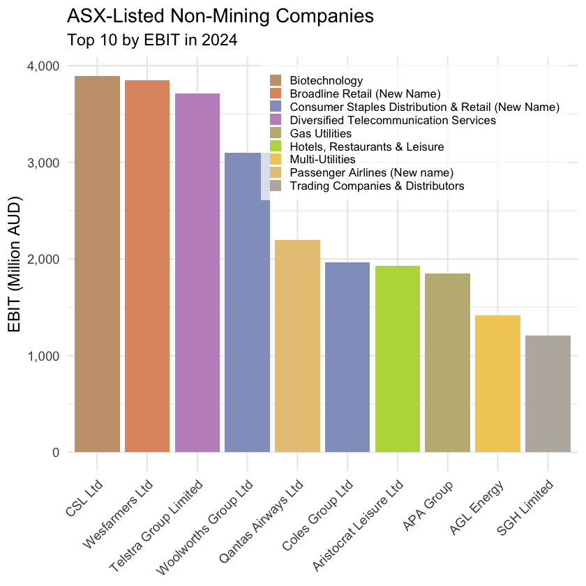
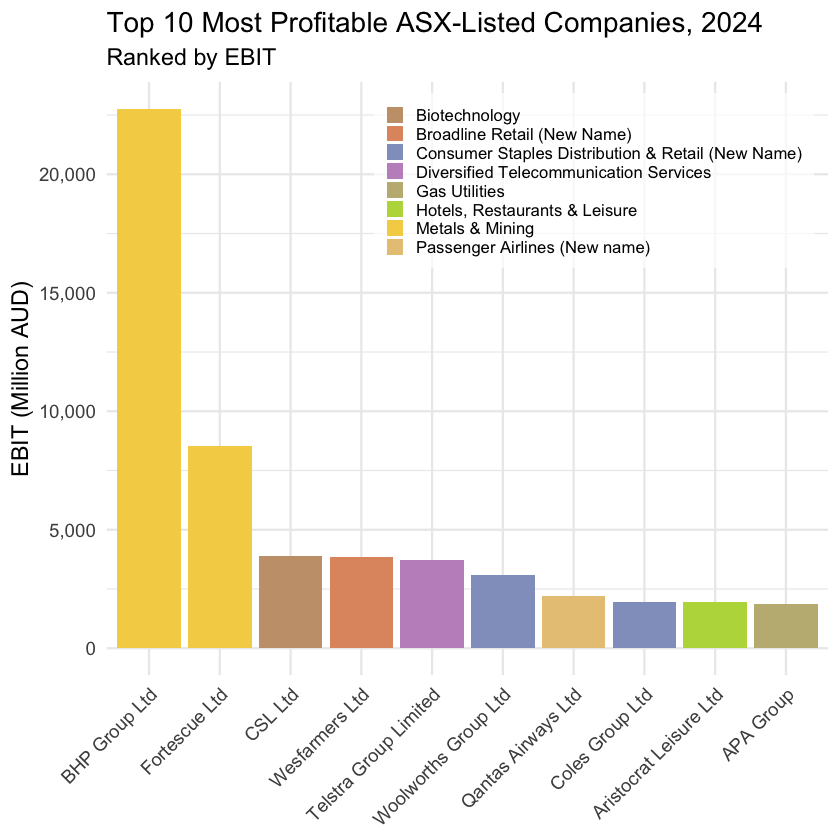

Topic 4.1 - 数据筛选与排序¶
1. R 中的管子语法格式¶
在本章开始之前，我们先介绍一下从本章开始要使用的一个重要的 R 语法格式 - 管子 pipes，符号是 |>：
- 管子是 R 语言中改变函数调用方式的一种语法格式，它可以让函数的调用从嵌套式结构变成线性结构，增强代码的可读性
-
如果我们想将对象
A传给函数f()：- 在传统的 R 语法中，我们需要写成
f(A) - 而使用管子语法后，我们可以写成
A |> f()，这样就可以直接从前往后读代码了
- 在传统的 R 语法中，我们需要写成
-
如果是函数嵌套，比方说
f(A)的结果再传给函数g()- 在传统的 R 语法中，我们需要写成
g(f(A)) - 而使用管子语法后，我们可以写成
A |> f() |> g()，这样就可以直接从前往后读代码了
- 在传统的 R 语法中，我们需要写成
比方说我们本节要使用到的一段代码：
- 如果使用嵌套式结构的话，代码是这样的：
t10_all_profits <- slice_head(arrange(asx_200_2024, desc(ebit)), n = 10)
-
这段代码要从里往外去读：
- 首先是
arrange(asx_200_2024, desc(ebit))，它的作用是对asx_200_2024这个数据框按照ebit这个变量进行降序排序 - 然后是
slice_head(..., n = 10)，它的作用是从上一步得到的结果中取出前 10 行
- 首先是
-
但是如果使用管子的话，代码就变成了这样：
t10_all_profits <- asx_200_2024 |>
arrange(desc(ebit)) |>
slice_head(n = 10)
-
这段代码直接从前往后读就可以了：
- 首先是
asx_200_2024，它是我们要处理的数据框 - 然后是
arrange(desc(ebit))，它的作用是对前面得到的数据框按照ebit这个变量进行降序排序 - 最后是
slice_head(n = 10)，它的作用是从上一步得到的结果中取出前 10 行
- 首先是
注意，使用管子后：
- 函数中的第一个参数默认是管子前面代码的结果，但是其他的参数还是不能够省略的
- 比如
slice_head()函数中的n = 10就不能省略，否则 R 就不知道我们要取出多少行了
2. 数据筛选与排序基础¶
(1) 数据筛选与排序函数¶
在 R 的 dplyr 包中，数据的筛选和排序是非常常见的操作，包括的函数有以下一些：
-
filter()函数：- 用于根据条件筛选数据框中的行，里面的参数是包括列名的条件表达式
- 条件表达式可以直接使用数据框中的列来进行比较
-
arrange()函数：- 用于根据一个或多个变量对数据框进行排序，里面的参数是列名，默认是升序排序，如果要降序排序需要在列名前加上
desc() - 如果有多个列名，按照它们在函数中的顺序进行排序，先按照第一个列名排序，如果有相同的值，再按照第二个列名排序，以此类推
- 用于根据一个或多个变量对数据框进行排序，里面的参数是列名，默认是升序排序，如果要降序排序需要在列名前加上
-
slice_head()函数：- 用于从数据框的开头取出指定数量的行，里面的参数是
n = 数字 - 通常与
arrange()函数一起使用，来取出排序后的前几行数据
- 用于从数据框的开头取出指定数量的行，里面的参数是
首先我们导入包和数据，并且只筛选本节会用到的列：
library(tidyverse) # 包含了 ggplot2、dplyr、tidyr 等常用数据处理和可视化包
library(scales) # 包含用于坐标轴格式化和转换的函数
library(ggokabeito) # 包含色盲友好的调色板（可选）
library(ggthemes) # 包含额外的 ggplot 主题
library(patchwork) # 用于组合多个 ggplot 图形
library(stringr) # 包含一致的字符串操作函数
library(RColorBrewer) # 包含用于定性和顺序颜色调色板的函数
# 导入 ASX 200 的数据，并且只筛选本节会用到的列
asx_200_2024 <- read_csv("asx_200_2024.csv") |>
select(gvkey, conml, fyear, ebit, invested_capital, industry)
# 展示数据的前 10 行，来看看数据的结构和内容
asx_200_2024 |> slice_head(n = 10)
| gvkey <chr> | conml <chr> | fyear <dbl> | ebit <dbl> | invested_capital <dbl> | industry <chr> |
|-------------|------------------------|-------------|------------|------------------------|---------------------------------------------------|
| 013312 | BHP Group Ltd | 2024 | 22771.0 | 69838.0 | Metals & Mining |
| 210216 | Telstra Group Limited | 2024 | 3712.0 | 34320.0 | Diversified Telecommunication Services |
| 223003 | CSL Ltd | 2024 | 3896.0 | 31584.0 | Biotechnology |
| 212650 | Transurban Group | 2024 | 1132.0 | 31864.0 | Transportation Infrastructure |
| 100894 | Woolworths Group Ltd | 2024 | 3100.0 | 22292.0 | Consumer Staples Distribution & Retail (New Name) |
| 212427 | Fortescue Ltd | 2024 | 8520.0 | 24931.0 | Metals & Mining |
| 101601 | Wesfarmers Ltd | 2024 | 3849.0 | 19863.0 | Broadline Retail (New Name) |
| 226744 | Ramsay Health Care Ltd | 2024 | 938.7 | 16465.6 | Health Care Providers & Services |
| 220244 | Qantas Airways Ltd | 2024 | 2198.0 | 6885.0 | Passenger Airlines (New name) |
| 017525 | Origin Energy Ltd | 2024 | 952.0 | 12867.0 | Electric Utilities |
接下来，我们数据的筛选逻辑是：
- 我们先从 ASX 200 的数据中筛选出矿产行业的公司
- 然后在这个基础上按照 EBIT 这个变量进行降序排序，并取出前 10 行数据
t10_mining_profits <- asx_200_2024 |>
filter(industry == "Metals & Mining") |> # 筛选出矿产行业的公司
arrange(desc(ebit)) |> # 按照 EBIT 进行降序排序
slice_head(n = 10) # 取出前 10 行数据
t10_mining_profits
| gvkey <chr> | conml <chr> | fyear <dbl> | ebit <dbl> | invested_capital <dbl> | industry <chr> |
|-------------|-----------------------------|-------------|------------|------------------------|-----------------|
| 013312 | BHP Group Ltd | 2024 | 22771.000 | 69838.000 | Metals & Mining |
| 212427 | Fortescue Ltd | 2024 | 8520.000 | 24931.000 | Metals & Mining |
| 252290 | Bluescope Steel Ltd | 2024 | 1303.600 | 12007.000 | Metals & Mining |
| 259625 | Northern Star Resources Ltd | 2024 | 961.800 | 10135.200 | Metals & Mining |
| 253350 | Evolution Mining Ltd | 2024 | 824.861 | 6161.270 | Metals & Mining |
| 271326 | Perseus Mining Ltd | 2024 | 462.231 | 1783.196 | Metals & Mining |
| 286945 | Pilbara Minerals Ltd | 2024 | 396.252 | 3799.912 | Metals & Mining |
| 205194 | Mineral Resources Ltd | 2024 | 319.000 | 8920.000 | Metals & Mining |
| 256406 | Ramelius Resources Ltd | 2024 | 265.971 | 1339.595 | Metals & Mining |
| 210805 | Perenti Ltd | 2024 | 240.630 | 2716.987 | Metals & Mining |
(2) 数据筛选排序后的可视化¶
数据筛选排序的结果，经常是我们后续建立柱状图的基础：
- 接下来，我们准备在
ggplot2中将前10家矿产公司的 EBIT 进行可视化 - 使用的数据就是我们刚才筛选排序得到的
t10_mining_profits这个数据框了
在此之前，我们先做一个准备工作，也为后续的小节做准备，就是给不同行业分配一下颜色：
- 首先，我们用一个变量
industry_levels来存储数据表中的所有行业
industry_levels <- asx_200_2024$industry |> # 获取数据表中行业这一列提取为一个向量
unique() |> # 获取这个向量的唯一值，也就是去重的操作
sort() # 对这个唯一值进行排序，得到一个有序的行业列表
industry_levels
1. 'Aerospace & Defense'
2. 'Air Freight & Logistics'
3. 'Automobile Components (New Name)'
4. 'Beverages'
5. 'Biotechnology'
...
40. 'Real Estate Management & Development (New Code)'
41. 'Software'
42. 'Specialty Retail'
43. 'Trading Companies & Distributors'
44. 'Transportation Infrastructure'
- 之后，我们使用
setNames()函数来创建一个命名的颜色向量industry_colors - 它的名字是行业名称，值是对应的颜色，这样我们在后续的可视化中就可以直接使用这个颜色向量来给不同行业分配颜色了
industry_colors <- setNames( # 将下面的颜色向量和行业名称进行配对，创建一个命名的颜色向量
colorRampPalette(RColorBrewer::brewer.pal(8, "Set2"))(length(industry_levels)), # 使用 RColorBrewer 的 Set2 调色板生成的颜色代号
industry_levels # 行业名称
)
industry_colors
Aerospace & Defense: "#66C2A5"
Air Freight & Logistics: "#7EB99A"
Automobile Components (New Name): "#96B08F"
Beverages: "#AFA884"
Biotechnology: "#C79F79"
...
Real Estate Management & Development (New Code): "#D3BE9E"
Software: "#CBBBA3"
Specialty Retail: "#C3B8A8"
Trading Companies & Distributors: "#BBB5AD"
Transportation Infrastructure: "#B3B3B3"
接下来，我们还得再做一个准备工作，才能开始画柱状图：
- 那就是给公司名称一个顺序，让柱状图按照 EBIT 从高到低的顺序排列：
t10_mining_profits <- t10_mining_profits |>
mutate(conml = reorder(conml, -ebit))
- 在这段代码中，我们使用
mutate()函数来将conml这列从字符型character改为了因子型factor - 字符型和因子型都可以表示类别的概念，但是因子型是可以指定类别顺序的，而字符型是没有顺序的，或者说除了字典序之外没有其他的顺序了
- 在
reorder()函数中，我们指定了conml这个变量按照ebit这个变量进行排序，并且是降序排序（因为前面加了一个负号），这样在后续的柱状图中，公司的名称就会按照 EBIT 从高到低的顺序排列了 - 注意，我们这里并没有将数据框进行排序，而是给公司名称一个可比较的顺序，这样在后续的柱状图中就可以按照这个顺序来排列了
之后，我们就可以使用 ggplot2 来画柱状图了，其中的图像修饰代码我们就直接在注释里解释了：
# 定义图像
bar_plot_mine <- t10_mining_profits |>
ggplot(aes(x = conml, y = ebit, fill = industry)) +
# 柱状图使用的是 geom_bar 函数，其中 stat = "identity" 是强调直接使用数据中的数值来绘制柱子的高度，否则是像直方图那样根据数据的频数来绘制柱子高度的
geom_bar(stat = "identity") +
# 使用自定义的行业颜色调色板，scale_fill_manual() 函数的作用是告诉 ggplot2 使用我们指定的颜色来填充柱子，而不是默认的颜色，这样每个行业就会有一个独特的颜色，便于区分
scale_fill_manual(values = industry_colors) +
# 设置图表的标题和轴标签
labs(
x = NULL,
y = "EBIT (Million AUD)",
title = "ASX-Listed Mining Companies",
subtitle = "Top 10 by EBIT in 2024"
) +
# y 轴的数值格式化为带有逗号分隔的形式，这样当数值较大时更容易阅读，例如 1000000 会显示为 1,000,000
scale_y_continuous(labels = scales::comma) +
# 默认主题设置为 `theme_minimal()`，并且将基础字体大小设置为 14，这样设置后，主标题大小为 14，副标题大小为 12，轴标题大小为 12，轴文本大小为 10，这样整体的字体大小就比较协调了
theme_minimal(base_size = 14) +
# 主题中调整 x 轴文本的角度为 45 度，并且设置水平对齐方式为 1（右对齐），这样可以避免公司名称过长时重叠在一起
theme(axis.text.x = element_text(angle = 45, hjust = 1))
# 显示图像
bar_plot_mine

(3) 数据筛选与排序的更多练习¶
我们按照同样的逻辑来筛选非矿产行业 EBIT 最高的前 10 家公司：
# 创建一个新的数据框 `t10_other_profits`，包含 ASX 200 中除了矿产行业以外的公司，并且按照 EBIT 降序排列，保留前 10 行数据
t10_other_profits <- asx_200_2024 |>
# 选择除了矿产行业以外的公司
filter(industry != "Metals & Mining") |>
# 按 EBIT 降序排列
arrange(desc(ebit)) |>
# 保留前 10 行
slice_head(n = 10)
# 将公司名称改为因子类型，并强调 EBIT 的降序为因子顺序
t10_other_profits <- t10_other_profits |>
mutate(conml = reorder(conml, -ebit))
# 定义图像
bar_plot_other <- t10_other_profits |>
ggplot(aes(x = conml, y = ebit, fill = industry)) +
# 柱状图
geom_bar(stat = "identity") +
# 使用自定义的行业颜色调色板
scale_fill_manual(values = industry_colors) +
# 设置图表的标题和轴标签
labs(
x = NULL,
y = "EBIT (Million AUD)",
title = "ASX-Listed Non-Mining Companies",
subtitle = "Top 10 by EBIT in 2024"
) +
# y 轴的数值格式化为带有逗号分隔的形式
scale_y_continuous(labels = scales::comma) +
# 默认主题设置为 `theme_minimal()`，并且将基础字体大小设置为 14
theme_minimal(base_size = 14) +
# 主题中做以下调整：
theme(
axis.text.x = element_text(angle = 45, hjust = 1), # 调整 x 轴文本的角度为 45 度，并且设置水平对齐方式为 1（右对齐）
legend.position = c(0.98, 0.98), # 将图例放置在图表的右上角，使用坐标 (0.98, 0.98) 来微调位置，意思是距离顶端空2%，距离右侧空2%
legend.justification = c("right", "top"), # 设置图例的对齐方式为右上对齐
legend.title = element_blank(), # 去掉图例的标题
legend.text = element_text(size = 10), # 设置图例文本的字体大小为 10
legend.background = element_rect(fill = scales::alpha("white", 0.7), color = NA), # 设置图例背景为半透明的白色，并且去掉边框
legend.key.size = grid::unit(0.4, "cm"), # 设置图例键的大小为 0.4 厘米
legend.spacing.y = grid::unit(0.1, "cm") # 设置图例键之间的垂直间距为 0.1 厘米
)
# 显示图像
bar_plot_other

按照相同的逻辑，我们来筛选所有公司 EBIT 最高的前 10 家公司：
# 筛选所有公司 EBIT 最高的前 10 家公司，这里就没有按行业筛选的操作了
t10_all_profits <- asx_200_2024 |>
# 按照 EBIT 进行降序排序
arrange(desc(ebit)) |>
# 保留前 10 行数据
slice_head(n = 10)
# 将公司名称改为因子类型，并强调 EBIT 的降序为因子顺序
t10_all_profits <- t10_all_profits |>
mutate(conml = reorder(conml, -ebit))
# 定义图像
bar_plot_all <- t10_all_profits |>
ggplot(aes(x = conml, y = ebit, fill = industry)) +
# 柱状图
geom_bar(stat = "identity") +
# 使用自定义的行业颜色调色板
scale_fill_manual(values = industry_colors) +
# 设置图表的标题和轴标签
labs(
x = NULL,
y = "EBIT (Million AUD)",
title = "Top 10 Most Profitable ASX-Listed Companies, 2024",
subtitle = "Ranked by EBIT"
) +
# y 轴的数值格式化为带有逗号分隔的形式
scale_y_continuous(labels = scales::comma) +
# 默认主题设置为 `theme_minimal()`，并且将基础字体大小设置为 14
theme_minimal(base_size = 14) +
# 在主题中做以下调整：
theme(
axis.text.x = element_text(angle = 45, hjust = 1), # 调整 x 轴文本的角度为 45 度，并且设置水平对齐方式为 1（右对齐）
legend.position = c(0.98, 0.98), # 将图例放置在图表的右上角，使用坐标 (0.98, 0.98) 来微调位置，意思是距离顶端空2%，距离右侧空2%
legend.justification = c("right", "top"), # 设置图例的对齐方式为右上对齐
legend.title = element_blank(), # 去掉图例的标题
legend.text = element_text(size = 10), # 设置图例文本的字体大小为 10
legend.background = element_rect(fill = scales::alpha("white", 0.7), color = NA), # 设置图例背景为半透明的白色，并且去掉边框
legend.key.size = grid::unit(0.4, "cm"), # 设置图例键的大小为 0.4 厘米
legend.spacing.y = grid::unit(0.1, "cm") # 设置图例键之间的垂直间距为 0.1 厘米
)
# 显示图像
bar_plot_all

3. 数据筛选与排序的进阶操作¶
(1) 多条件筛选¶
在 R 的 dplyr 包中，我们可以使用 filter() 函数来进行多条件筛选：
-
我们之前学过 R 中的比较运算符与逻辑运算符：
- 比较运算符：
==（等于），!=（不等于），>（大于），<（小于），>=（大于等于），<=（小于等于） - 逻辑运算符：
&（与），|（或），!（非）
- 比较运算符：
-
在
filter()函数中，我们可以使用这些运算符来组合多个条件进行筛选
比方说，我们想要筛选出矿产行业中 EBIT 大于 1000 的公司，我们就可以这样写：
t10_mining_profits_filtered <- asx_200_2024 |>
filter(industry == "Metals & Mining" & ebit > 1000)
t10_mining_profits_filtered
| gvkey <chr> | conml <chr> | fyear <dbl> | ebit <dbl> | invested_capital <dbl> | industry <chr> |
|-------------|---------------------|-------------|------------|------------------------|---------------------|
| 013312 | BHP Group Ltd | 2024 | 22771.0 | 69838 | Metals & Mining |
| 212427 | Fortescue Ltd | 2024 | 8520.0 | 24931 | Metals & Mining |
| 252290 | Bluescope Steel Ltd | 2024 | 1303.6 | 12007 | Metals & Mining |
(2) 多变量排序¶
在 R 的 dplyr 包中，我们可以使用 arrange() 函数来进行多变量排序：
- 多个列名在
arrange()函数中，只需用逗号分隔即可 - 如果需要降序排列，在列名前加上
desc()函数即可 - 多变量排序的逻辑是，先按照第一个列名进行排序，如果有相同的值，再按照第二个列名进行排序，以此类推
例如，我们想要先按照行业进行升序排序，然后在每个行业内部按照 EBIT 进行降序排序，我们就可以这样写：
t10_sorted <- asx_200_2024 |>
arrange(industry, desc(ebit))
t10_sorted
| gvkey <chr> | conml <chr> | fyear <dbl> | ebit <dbl> | invested_capital <dbl> | industry <chr> |
|-------------|---------------------------------|-------------|------------|------------------------|----------------------------------|
| 232041 | Austal Limited | 2024 | -23.195 | 1285.723 | Aerospace & Defense |
| 208239 | K & S Corp Ltd | 2024 | 36.201 | 422.175 | Air Freight & Logistics |
| 349397 | Silk Logistics Holdings Limited | 2024 | 29.309 | 464.549 | Air Freight & Logistics |
| 101568 | Amotiv Limited | 2024 | 172.371 | 1439.831 | Automobile Components (New Name) |
| 211528 | Arb Corporation Ltd | 2024 | 144.485 | 699.667 | Automobile Components (New Name) |
| 211585 | Schaffer Corp Ltd | 2024 | 37.374 | 323.346 | Automobile Components (New Name) |
| 297352 | Treasury Wine Estates Ltd | 2024 | 287.900 | 6769.400 | Beverages |
| 211545 | Australian Vintage Ltd | 2024 | -28.957 | 350.877 | Beverages |
| 223003 | CSL Ltd | 2024 | 3896.000 | 31584.000 | Biotechnology |
| 271607 | Mesoblast Ltd | 2024 | -57.972 | 599.278 | Biotechnology |
| 101601 | Wesfarmers Ltd | 2024 | 3849.000 | 19863.000 | Broadline Retail (New Name) |
| 203007 | Harvey Norman Holdings Limited | 2024 | 660.727 | 6816.502 | Broadline Retail (New Name) |
| 293130 | Myer Holdings Ltd-old | 2024 | 161.000 | 1884.300 | Broadline Retail (New Name) |
| 270418 | The Reject Shop Ltd | 2024 | 13.778 | 406.301 | Broadline Retail (New Name) |
| 321584 | Reliance Worldwide Corp Ltd | 2024 | 203.792 | 1825.174 | Building Products |
| 101742 | GWA Group Ltd | 2024 | 66.027 | 487.404 | Building Products |
| 237812 | Aft Corporation Ltd | 2024 | 28.757 | 582.344 | Building Products |
| 100442 | Orica Ltd | 2024 | 708.700 | 7068.600 | Chemicals |
| 257860 | Incitec Pivot Ltd | 2024 | 410.600 | 6800.300 | Chemicals |
| 101613 | Nufarm Ltd | 2024 | 60.065 | 3309.493 | Chemicals |
4. 数据筛选与排序小结¶
在 R 的 dplyr 包中，数据的筛选和排序涉及以下函数：
-
filter()函数：- 用于根据条件筛选数据框中的行，里面的参数是包括列名的条件表达式
- 如果有多个条件，只需用逻辑运算符
&（与）或|（或）将条件连接起来即可
-
arrange()函数：- 用于根据一个或多个变量对数据框进行排序，里面的参数是列名，默认是升序排序，如果要降序排序需要在列名前加上
desc() - 如果有多个列名，按照它们在函数中的顺序进行排序，先按照第一个列名排序，如果有相同的值，再按照第二个列名排序，以此类推
- 用于根据一个或多个变量对数据框进行排序，里面的参数是列名，默认是升序排序，如果要降序排序需要在列名前加上
-
slice_head()函数：- 用于从数据框的开头取出指定数量的行，里面的参数是
n = 数字 - 通常与
arrange()函数一起使用，来取出排序后的前几行数据
- 用于从数据框的开头取出指定数量的行，里面的参数是